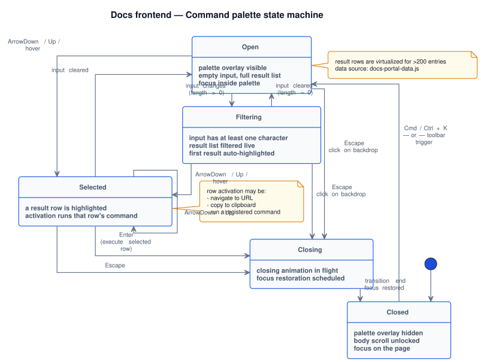

v1
Docs frontend navigation, search, and discovery
Top nav, command palette, breadcrumbs, in-page TOC, and search.
Overview
This page documents how readers discover content in docs frontend: global navigation, sidebar/drawer navigation, search, command palette, and section-level navigation aids.
Client-side docs search
- Index source:
services/frontend/portal/assets/search-index.jsonloaded lazily byloadDocsSearchIndex(). - Ranking model: weighted fields + IDF + boosts for exact/prefix matches
(
runDocsSearch()). - Query UX: debounce, keyboard combobox, highlighted matches, did-you-mean, related queries, and empty-state quick links.
- Error handling: explicit
file://warning when index cannot be loaded outside HTTP(S). - Telemetry: emits
search_query,search_result_click,search_success, and error events.
Search index lifecycle and change workflow
- Source of truth: index data lives in generated
services/frontend/portal/assets/search-index.json. - When to regenerate: after material content additions, heading changes, or IA rewrites that impact discoverability.
- Validation pass: run a query smoke set (entity names, API terms, internal page titles) and confirm ranking and highlights.
- Failure behavior: if index fails to load, runtime shows explicit fallback guidance (including
file://constraints). - Documentation sync: update this page and frontend playbooks when index generation process changes.
Command palette (quick actions)
Palette finite-state machine
Closed and Open are steady states; Filtering, Selected, and Closing capture in-flight transitions. All input modalities resolve through this machine.

services/portal/internal/uml/sequences/command_palette_state_machine.puml
- Desktop scope: enabled for
min-width: 761px, disabled on smaller viewports. - Open shortcuts: Cmd/Ctrl+K, Cmd/Ctrl+Shift+K, Cmd/Ctrl+Shift+P, Shift+P, /.
- Command source: page actions + section-jump actions generated from
buildDocsPageActions()andbuildDocsSectionActions(). - Execution modes: enter to execute, meta-enter to open links in new tab.
- Accessibility: dialog semantics, focus trap, keyboard navigation, and focus return to launcher.
Visual reference · palette UI stages
The state machine above describes how the palette transitions. This section describes what readers see at three of those states: Closed (the launcher waiting on the toolbar), Open (the dialog has appeared, focus is in the input, no query yet), and Filtering + Selected (a query is typed and the first matching row is highlighted, ready for Enter).
Three palette stages, side-by-side
Closed → Open → Filtering. Each mock is the same dialog at a different state; transitions correspond to the edges of the FSM diagram above.
services/frontend/portal/assets/docs-nav.js; states correspond to the FSM diagram above; hotkeys per hotkeys reference.
Command Palette implementation details
| Area | Implementation details |
|---|---|
| Runtime lifecycle | syncDocsPageActionsForViewport() enables or removes palette runtime depending on media
query, using installDocsQuickActionsUi() and destroyDocsQuickActionsUi().
|
| Global shortcuts | handleDocsQuickActionsGlobalKeydown() handles primary and fallback hotkeys, toggles
open/close, and ignores slash/shift+P while typing in inputs. |
| Filtering model | Items are filtered from combined action sources via label, hint, group, and keyword matching in
filterActions(), then rendered in grouped lists by renderActions(). |
| Keyboard model | ArrowUp/ArrowDown move active item, Enter executes, Esc closes; list and filter input each maintain expected focus behavior. |
| New-tab behavior | Cmd/Ctrl + Enter executes selected link through
window.open(..., "_blank", "noopener") and emits execution telemetry with
new_tab: true. |
| Telemetry | Palette emits palette_open, palette_close, palette_filter,
and palette_execute events via emitDocsPaletteTelemetry(). |
On this page FAB (desktop-only)
The "On this page" TOC is a fixed-position FAB (Floating Action Button), not a grid-column rail. It starts collapsed as a 52 × 52 px circle and expands to a 232 px card on click. Full UI contract is in Sticky On this page TOC and scroll-spy; this section covers the placement contract and CSS variable system only.
| Aspect | Details |
|---|---|
| Default state | Always collapsed on first render — unconditionally. No page-type exclusion. Promo toast fires once and offers an "Open" action. |
| Viewport scope | Visible only on viewports > 1024 px. Hidden via @media (max-width: 1024px) { .docs-inpage-toc { display: none; } }. On tablet/phone the spy still mounts but does no visible work. |
| Horizontal position |
Driven by the CSS custom property --docs-toc-fab-left on .internal-layout__shell:
position: fixed children inherit CSS custom properties from their DOM ancestors, so the non-fixed shell drives the FAB position. Transition: left 320ms ease.
|
| Runtime implementation | initAutoInPageToc() builds the FAB. applyCollapsedState(bool) handles collapse/expand including dim reset and tooltip toggle. applyDimState(bool) manages opacity. |
| CSS state classes | .docs-inpage-toc--collapsed morphs to 52 × 52 px circle and hides nav via max-height: 0 / opacity: 0. .docs-inpage-toc--dim sets opacity: 0.22. There is no .docs-page-layout__inner--toc-collapsed class — the layout grid is always single-column (minmax(0, 1fr)). |
| Accessibility | Toggle updates aria-expanded, aria-controls, and aria-label ("Hide On this page" / "Show On this page"). Collapsed aside carries data-tooltip="On this page"; tooltip removed when expanded. |
| Visual style | 52 px circle uses var(--card) background, var(--line) border, and a two-layer box-shadow. Expanded card: 232 px wide, 14 px border-radius. Tokens from services/frontend/portal/assets/docs.css (.docs-inpage-toc*). |
Supporting discovery features
- Breadcrumbs: built from path prefixes and hub mapping in
buildDocsBreadcrumbItems(). - Skip link:
injectDocsSkipToContentLink()adds keyboard-first jump to main content. - Continue reading: prompts readers to resume previous section and scroll position.
Continue reading details (for example: Continue from § Guides catalog)
- Storage key: reading progress map is stored in local storage at
docs-reading-progress-v1. - Persistence logic:
initDocsContinueReadingPrompt()saves position and heading snapshot with throttled updates. - Anchor snapshot:
currentContinueAnchorSnapshot()captures nearest active headingh2/h3id and label. - Prompt title: if label exists, UI shows
Continue from § {label}; for example, when the label isGuides catalog, users see Continue from § Guides catalog. - TTL policy: old entries expire after 14 days
(
DOCS_CONTINUE_READING_TTL_MS). - Actions: Continue restores hash/scroll position; Start from top clears saved progress and scrolls to top.
Acceptance checklist for navigation and discovery changes
- Desktop: top groups visible, sidebar available, search and quick actions working.
- Tablet/phone: drawer works with Menu button, quick actions disabled by design.
- Search returns relevant results and keyboard navigation activates the selected hit.
- In-page TOC renders from headings and active link tracks scroll.
- No keyboard shortcut collisions while typing in form fields.
Per-component states and accessibility
| Surface | States | Role / ARIA | Keyboard | Reduced motion | Screen-reader announcement |
|---|---|---|---|---|---|
| Top navigation bar | default, scrolled (sticky), drawer-mode, theme-changing | role="banner" wrapping role="navigation" |
Tab through links; theme toggle activatable with Enter | Skip backdrop-blur fade on scroll | "Site navigation" |
| Internal sidebar (tree) | collapsed, expanded, active-page-highlighted, drawer-mode, sidebar-collapsed (icon rail) | role="navigation" with nested <details> for groups |
Tab to summary; Enter expands; arrow keys traverse children | Skip details-expand animation | "Documentation navigation, N groups" |
| Drawer (tablet/phone) | closed, opening, open, closing | role="dialog" + aria-modal="true"; focus trap; backdrop dismissable |
Menu launcher opens; Esc or backdrop click closes | Skip slide-in; show flat | "Internal docs menu opened" |
| Search input + results | empty, typing, loaded, no-results, navigating, error | role="combobox" on input + role="listbox" on panel |
/ focuses input; ↑/↓ navigates; Enter activates; Esc closes | Skip results fade-in | "N search results, item 1 of N" |
| Command palette (quick actions) | closed, open, filtering, navigating | role="dialog" + aria-modal="true" with focus trap |
Cmd+K / / opens; Esc closes; ↑/↓/Enter | Open instantly | "Quick actions palette open, type to search" |
| In-page TOC ("On this page") | desktop-aside, collapsed, expanded, active-section-highlighted | role="navigation" with aria-label="On this page" |
Tab traverses; Enter jumps; </> collapse on desktop | Skip smooth scroll on jump | "On this page, N sections" |
| Continue reading prompt | hidden, visible, dismissed, expired | role="status" |
Esc dismisses; Enter on jump button | Skip slide-in | "Resume from section X" |
Do's and Don'ts
| Do | Don't |
|---|---|
Add new sidebar entries to INTERNAL_SIDEBAR_NAV in internal-sidebar.js — the single source of truth. |
Duplicate links into the drawer top-nav config — both surfaces derive from the same array. |
| Verify the command palette opens with both Cmd+K and / after any keyboard-shortcut change. | Repurpose either shortcut — both are documented contracts users rely on (see hotkeys). |
Update assets/search-index.json when adding a new top-level page so search results stay complete. |
Expect the index to auto-regenerate — it is currently committed by hand. |
Group related sub-sections under <details> so the in-page TOC stays scannable on long pages. |
Flatten a page into 30 sibling <h2> headings — the TOC becomes a wall of links and orientation collapses. |